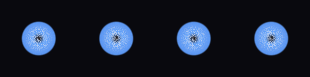

shader_review_mutate_001_portal_swirl_2d_001
cov 0.162 | motion 0.018 | contrast 0.156 |
color 0.254 | edge 0.019 | center 0.000
- good candidate: mutate locally around these params with smaller jitter
params
{
"color_outer": [
0.3897349613267358,
0.6451786717412092,
0.9978769975980344
],
"color_mid": [
0.3648028078533117,
0.5961917059557591,
0.9627045024588344
],
"color_inner": [
0.7930894985902556,
0.8580183737493984,
0.9728098745386025
],
"color_void": [
0.07358068012033156,
0.03876783850190203,
0.01805432590010128
],
"radius": 0.4101,
"swirl": 8.8423,
"spin_speed": -1.539,
"depth_pulse": 0.0,
"arms": 10,
"arm_strength": 1.0775,
"opacity": 0.9766
}